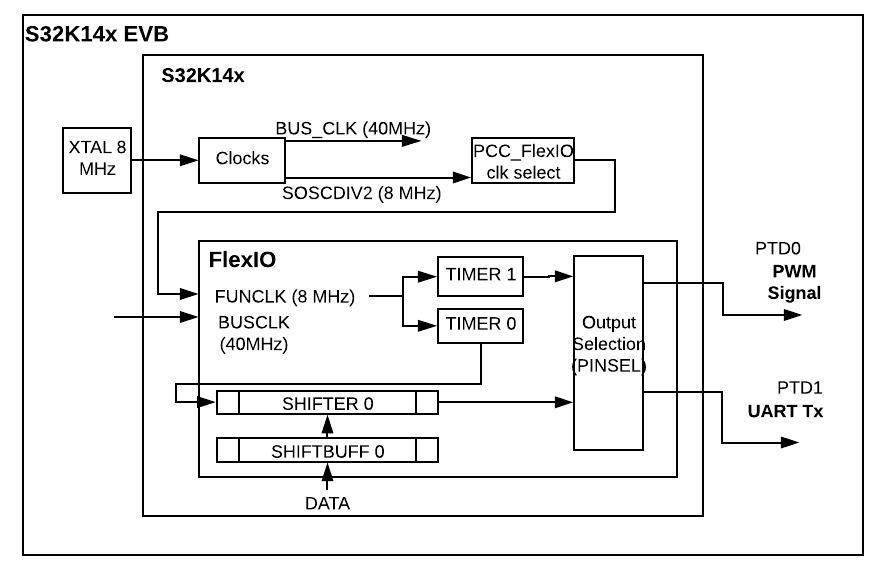

Description
The FlexIO is a highly configurable module providing a wide range of functionality.
This example configures two timers and one pin to emulate:
- PWM signal at 100KHz, with duty cycle as Init function parameter.
- UART 8-bits Transfer at 19200 b/s (polling technique).

Design
- Disable watchdog
- System clocks: Initialize SOSC for 8 MHz, sysclk for 80 MHz, RUN mode for 80 MHz
- Initialize port pins:
- Enable clock to Port D and Port E modules
- PTD0, PTD1 and PTE15: Configure for FXIO_D0, FXIO_D1 and FXIO_D2
- Initialize FlexIO as Tx UART instance:
- Enable clock source of SOSC_DIV2_CLK
- Select: Timer 0, Shifter 0 and FXIO_D1.
- Timer 0 triggered by Shifter 0 Status flag.
- Start bit and Stop bit enabled.
- Configure baud rate: 19200 baud, one stop bit, 8 bits Transfer
- No interrupts, DMA or match features enabled
- Initialize FlexIO to output a PWM signal at 100KHz:
- Select: Timer 1 and FXIO_D0.
- Configure Timer 1 as 8-bit dual counters.
- Calculate value to TIMCMP, with given duty cycle.
- Enable FlexIO module.
- Transmit character string: "Emulating UART by Using FlexIO module..."
Loop:
- Wait forever.
Pins definitions:
| S32K1xx | FlexIO | Function |
| PTD0 | FXIO_D0 | PWM 100 KHz |
| PTD1 | FXIO_D1 | UART @19200 bps |
Driver Functions:
main.c
#include "device_registers.h"
{
PCC->PCCn[PCC_PORTD_INDEX]|=PCC_PCCn_CGC_MASK;
PORTD->PCR[0] = PORT_PCR_MUX(6);
PORTD->PCR[1] = PORT_PCR_MUX(6);
PTD->PDDR |= 1<<0|1<<1;
}
{
WDOG->CNT=0xD928C520;
WDOG->TOVAL=0x0000FFFF;
WDOG->CS = 0x00002100;
}
{
for(;;)
{
}
}
 1.8.17
1.8.17